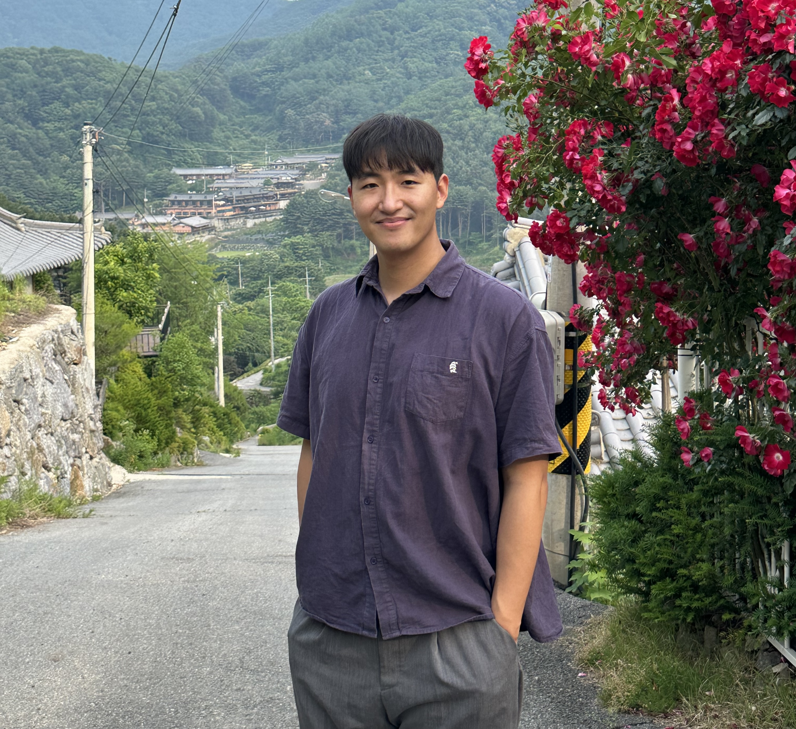
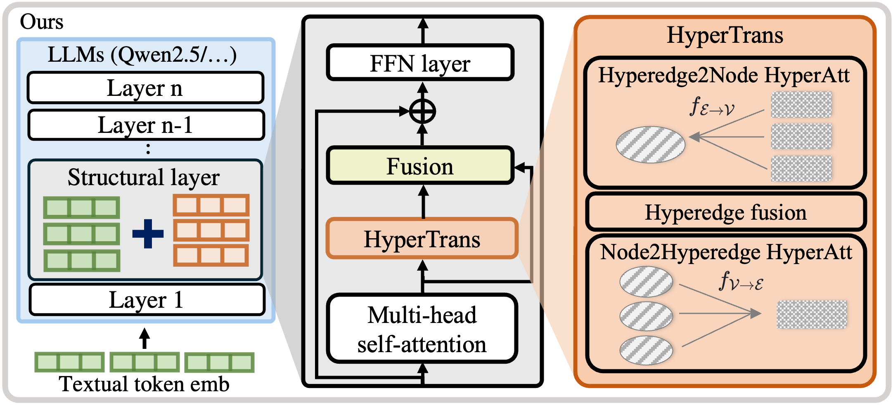
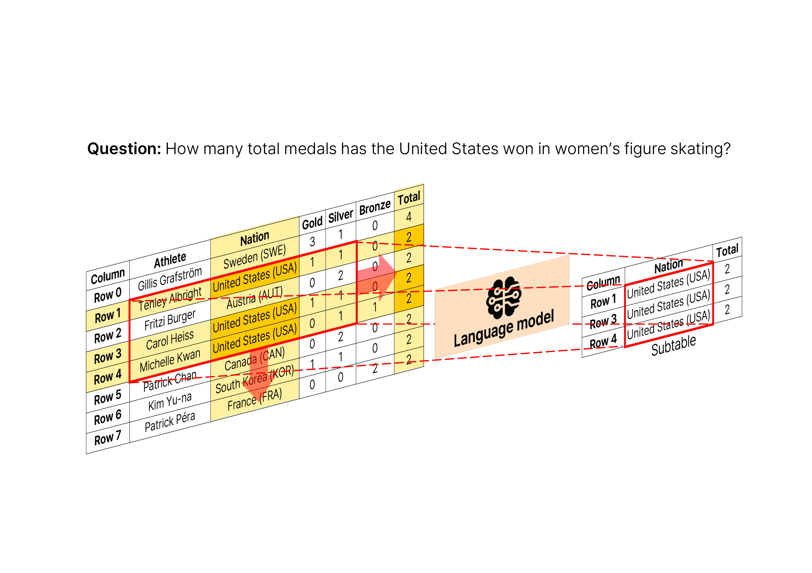
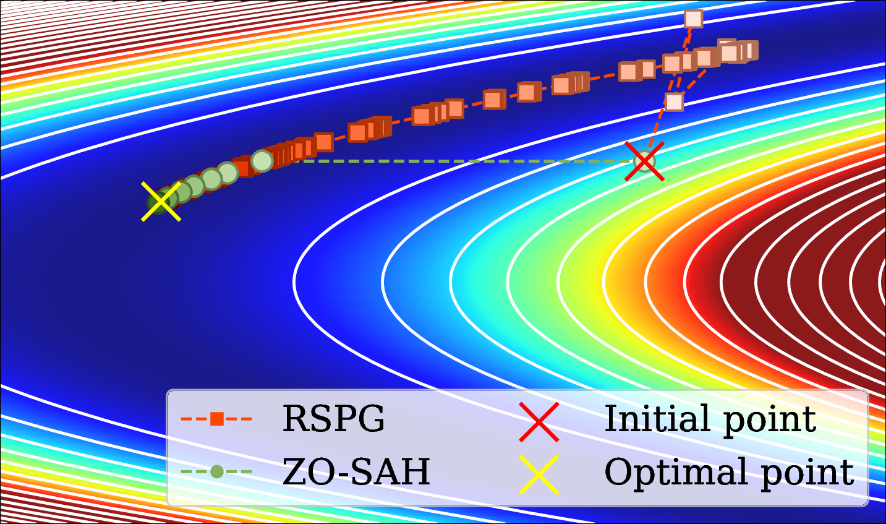
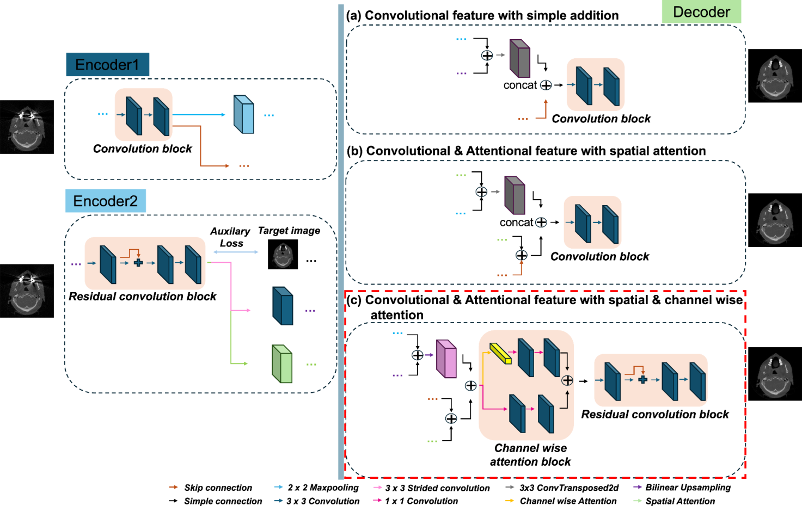
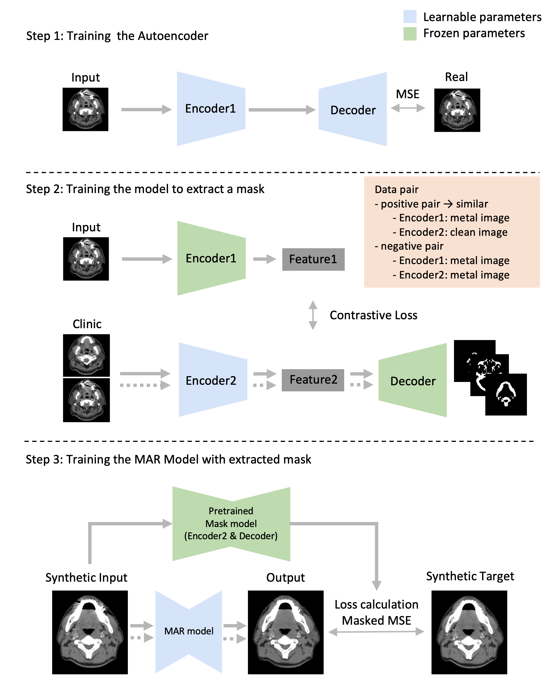

Wonjin Lee
I am an integrated M.S.-Ph.D. student at the Machine Learning and Vision Group (MLV Group), advised by Prof. Kwang In Kim. I am currently enrolled in the Graduate School of Artificial Intelligence at POSTECH.
My research interests include multimodal large language models, structured data understanding such as graphs and tables, and document understanding.
CV | Google Scholar | LinkedIn
Publications

HInT: Hypergraph Infusion at the Structural Layers Improves Table Understanding
Wonjin Lee, Soomi Jeong, Kwang In Kim
ICML, 2026
project page | paper | poster

Piece of Table: A Divide-and-Conquer Approach for Selecting Sub-Tables in Table Question Answering
Wonjin Lee, Kyumin Kim, Sungjae Lee, Jihun Lee, Kwang In Kim
ACL, 2026
project page | paper | poster

Subspace-based Approximate Hessian Method for Zeroth-Order Optimization
Dongyoon Kim, Sungjae Lee, Wonjin Lee, Kwang In Kim
arXiv preprint, 2025

Dual-encoder architecture for metal artifact reduction for kV-cone-beam CT images in head and neck cancer radiotherapy
Juhyeong Ki, Jung Mok Lee, Wonjin Lee, Jin Ho Kim, Hyeongmin Jin, Seongmoon Jung, Jimin Lee
Scientific Reports, 2024

Mask-guided metal artifact reduction with contrastive learning
Wonjin Lee et al.
IEEE Access, 2025
Experience
Machine Learning and Vision Group (MLV Group) | Research Student Jan. 2024 - Present
Research on machine learning, vision, table understanding, and optimization.
KAIST Algorithmic Intelligence Lab | Research Intern May 2023 - Oct. 2023
Worked on machine learning research in the Algorithmic Intelligence Lab.
GenesisLab Inc. | AI Researcher Nov. 2022 - Apr. 2023
Developed video lip-sync detection, speaker classification, and interview video cheating classification models.
UNIST Radiation and Medical Intelligence Lab | Research Intern Oct. 2021 - Apr. 2023
Worked on sinusitis classification from infrared images and metal artifact reduction for head and neck CT.
NCSoft Speech AI Lab, Singing Voice Team | Research Intern Jul. 2021 - Feb. 2021
Developed a wav-to-MIDI automatic singing melody transcription model for automating manual transcription tasks.
Education
Pohang University of Science and Technology | Pohang, South Korea Mar. 2024 - Present
Integrated M.S.-Ph.D. in Artificial Intelligence, advised by Prof. Kwang In Kim.
Korea University | Seoul, South Korea Mar. 2016 - Feb. 2023
B.S. in Environmental Science & Ecological Engineering.
Academic Services
Conference Reviewer
- AAAI: 2024
- CVPR: 2025
Journal Reviewer
- IEEE Trans. on Pattern Analysis and Machine Learning (TPAMI): 2025, 2026